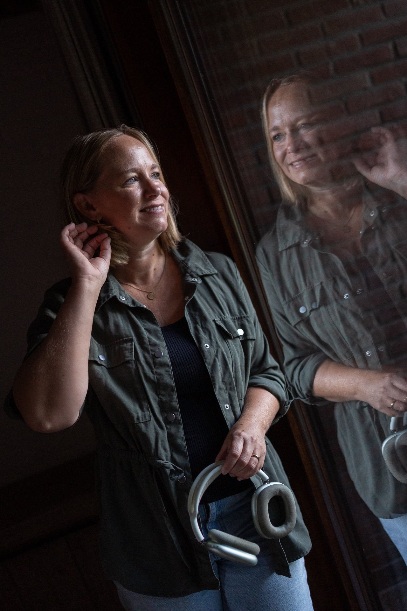

Aflevering 1
Hoe weet je dat het HG is?
Over herkennen wanneer ernstige zwangerschapsmisselijkheid Hyperemesis Gravidarum is.
Download de checklist Luister op Spotify
Inmiddels heb ik zoveel kennis over HG dat ik het zonde vind die niet te delen. Daarom ben ik gestart met het opnemen van podcasts.

Over herkennen wanneer ernstige zwangerschapsmisselijkheid Hyperemesis Gravidarum is.
Download de checklist Luister op SpotifyOver specialistische coaching tijdens zwangerschap, herstel en kinderwens.
Luister op SpotifyPraktische en persoonlijke kennis vanuit ervaring én expertise.
Luister op SpotifyOver wat herstel na een HG-zwangerschap kan vragen, lichamelijk en mentaal.
Luister op Spotify